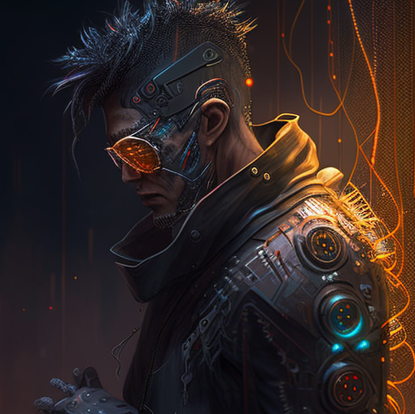

Имя: Дэкстер Харрис
Возраст: 32 года
Профессия: Наемный охотник за головами.

Биография:
Дэкстер Харрис вырос в темных и опасных улицах Неонового Города. У него не было ничего, кроме своего
остроумия и навыков выживания. В подростковом возрасте он стал хакером, но позже обратил свое внимание на
охоту за головами. Специализируясь на поимке преступников и целей, которых невозможно схватить обычными
способами, он прославился своими результатами и стал одним из самых известных наемных охотников.
Дэкстер жесток, циничен и непредсказуем. Его технологические усовершенствования и киберпротезы помогают ему
в его работе, но оставляют его постоянно на грани человечности. Он не имеет страха и готов рискнуть всем,
чтобы выполнить свою миссию. Он одинокий волк, всегда в поиске новых контрактов и соперников, которые могут
испытать его способности.